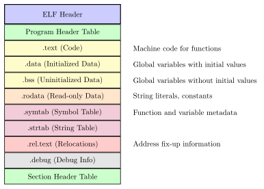
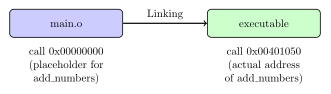
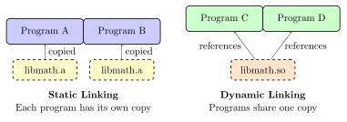

Chapter 4: Object Files: The Incomplete Puzzle Pieces¶
After compilation, we don’t immediately get an executable program. Instead, we get object files - partially compiled modules that contain machine code but aren’t yet ready to run. This chapter explores these intermediate artifacts and their crucial role in building software.
4.1 What Are Object Files?¶
Object files are the output of the compilation phase, containing: - Machine code (compiled functions) - Data (global variables, constants) - Symbol information (function and variable names) - Relocation information (how to adjust addresses) - Debug information (if requested)
Think of them as puzzle pieces that need to be assembled to form a complete picture.
Real-World Analogy
Imagine writing a book with multiple authors:
-
Each author writes their chapters independently (source files)
-
Chapters are edited and formatted (compilation)
-
The formatted chapters are not yet a book (object files)
-
An editor combines chapters, adds page numbers, and creates index (linking)
-
The final book is ready to read (executable)
4.2 Object File Formats¶
Different operating systems use different object file formats:
| Format | Systems | Extensions |
|---|---|---|
| ELF (Executable and Linkable Format) | Linux, Unix | .o, .so, .a |
| Mach-O | macOS, iOS | .o, .dylib, .a |
| PE (Portable Executable) | Windows | .obj, .dll, .lib |
| COFF (Common Object File Format) | Older Unix | .o |
4.3 Anatomy of an ELF Object File¶
Let’s examine the most common format: ELF (Executable and Linkable Format).

4.3.1 ELF Header¶
The ELF header identifies the file and provides essential information:
typedef struct {
unsigned char e_ident[16]; // Magic number and other info
uint16_t e_type; // Object file type
uint16_t e_machine; // Architecture (x86, ARM, etc.)
uint32_t e_version; // File version
uint64_t e_entry; // Entry point address
uint64_t e_phoff; // Program header offset
uint64_t e_shoff; // Section header offset
uint32_t e_flags; // Processor-specific flags
uint16_t e_ehsize; // ELF header size
uint16_t e_phentsize; // Program header entry size
uint16_t e_phnum; // Number of program headers
uint16_t e_shentsize; // Section header entry size
uint16_t e_shnum; // Number of section headers
uint16_t e_shstrndx; // Section name string table index
} Elf64_Ehdr;
4.4 Creating and Examining Object Files¶
Let’s create object files from our example program:
// math_utils.c
int add_numbers(int a, int b) {
return a + b;
}
int multiply_numbers(int a, int b) {
return a * b;
}
// main.c
#include <stdio.h>
// Declaration - tells compiler the function exists
extern int add_numbers(int a, int b);
int main() {
int result = add_numbers(15, 25);
printf("Result:
return 0;
}
# Compile to object files (not executables)
gcc -c math_utils.c -o math_utils.o
gcc -c main.c -o main.o
# Examine object file contents
objdump -h main.o # Show sections
objdump -t main.o # Show symbol table
objdump -d main.o # Disassemble code
objdump -r main.o # Show relocations
nm main.o # List symbols
readelf -a main.o # Detailed ELF information
4.5 Symbol Tables: The Directory of Contents¶
The symbol table is like a phone book for the object file, listing all functions and variables:
Practical Example
Symbol Table Example:
$ nm math_utils.o
0000000000000000 T add_numbers
0000000000000015 T multiply_numbers
$ nm main.o
U add_numbers
0000000000000000 T main
U printf
Symbol types:
-
T: Text (code) section, defined
-
U: Undefined (needs to be linked)
-
D: Data section, defined
-
B: BSS section, defined
-
C: Common (uninitialized data)
4.5.1 Symbol Information Structure¶
typedef struct {
uint32_t st_name; // Symbol name (index into string table)
uint8_t st_info; // Symbol type and binding
uint8_t st_other; // Symbol visibility
uint16_t st_shndx; // Section index
uint64_t st_value; // Symbol value (address)
uint64_t st_size; // Symbol size
} Elf64_Sym;
4.6 Relocations: Fixing Address References¶
Object files contain placeholders for addresses that will be determined during linking.
4.6.1 Why Relocations Are Needed¶
When compiling main.c, the compiler doesn’t know: 1. Where add_numbers will be located in memory 2. Where printf will be located 3. The final addresses of global variables

4.6.2 Relocation Entries¶
typedef struct {
uint64_t r_offset; // Location to apply relocation
uint64_t r_info; // Relocation type and symbol index
int64_t r_addend; // Constant addend
} Elf64_Rela;
Solved Problem
Understanding Relocations
Problem: Examine the relocations in an object file and understand what needs to be fixed.
Solution:
$ objdump -r main.o
main.o: file format elf64-x86-64
RELOCATION RECORDS FOR [.text]:
OFFSET TYPE VALUE
000000000000001a R_X86_64_PLT32 add_numbers-0x0000000000000004
000000000000002f R_X86_64_PLT32 printf-0x0000000000000004
RELOCATION RECORDS FOR [.rodata]:
OFFSET TYPE VALUE
0000000000000000 R_X86_64_64 .rodata
This tells us: - At offset 0x1a in the code, there’s a call to add_numbers that needs fixing - At offset 0x2f, there’s a call to printf that needs fixing - The R_X86_64_PLT32 type indicates a 32-bit PLT (Procedure Linkage Table) relocation
4.7 Sections in Detail¶
4.7.1 .text Section: The Code¶
Contains the compiled machine code:
$ objdump -d math_utils.o
0000000000000000 <add_numbers>:
0: 55 push
1: 48 89 e5 mov
4: 89 7d fc mov
7: 89 75 f8 mov
a: 8b 45 fc mov -0x4(
d: 03 45 f8 add -0x8(
10: 5d pop
11: c3 ret
4.7.2 .data Section: Initialized Globals¶
// These go in .data section
int global_counter = 42;
char message[] = "Hello";
float pi = 3.14159;
4.7.3 .bss Section: Uninitialized Globals¶
// These go in .bss section (Block Started by Symbol)
int uninitialized_array[1000]; // No initial values
static int counter; // Implicitly zero
char buffer[8192]; // Large uninitialized buffer
The .bss section doesn’t actually store zeros in the file - it just records how much zero-initialized space is needed.
4.7.4 .rodata Section: Read-Only Data¶
// These go in .rodata section
const int MAX_SIZE = 100;
const char* greeting = "Hello, World!";
static const double PI = 3.14159265359;
4.8 Static vs Dynamic Libraries¶
Object files can be packaged into libraries:
4.8.1 Static Libraries (.a files)¶
Archives of object files, linked directly into the executable:
# Create a static library
ar rcs libmath.a math_utils.o other_utils.o
# View contents
ar t libmath.a
# Extract object files
ar x libmath.a
# Link with static library
gcc main.o -L. -lmath -o program
# Or directly:
gcc main.o libmath.a -o program
4.8.2 Dynamic/Shared Libraries (.so files)¶
Loaded at runtime, shared between programs:
# Create a shared library
gcc -shared -fPIC math_utils.o -o libmath.so
# Link with shared library
gcc main.o -L. -lmath -o program
# View dependencies
ldd program
# Set library path for runtime
export LD_LIBRARY_PATH=.:$LD_LIBRARY_PATH
./program

4.9 Practical Examples¶
Practical Example
Building a Multi-File Project:
# Project structure:
# main.c - main program
# math_utils.c - math functions
# string_utils.c - string functions
# utils.h - declarations
# Step 1: Compile each source file to object file
gcc -c main.c -o main.o
gcc -c math_utils.c -o math_utils.o
gcc -c string_utils.c -o string_utils.o
# Step 2: Create a static library
ar rcs libutils.a math_utils.o string_utils.o
# Step 3: Link everything together
gcc main.o -L. -lutils -o myprogram
# Examine the final executable
size myprogram # Show section sizes
strings myprogram # Extract string literals
objdump -h myprogram # Show all sections
4.10 Exercises¶
Exercise for You
Exercise 4.1: Object File Analysis
Create a simple C program with: 1. A global initialized variable 2. A global uninitialized array 3. A function that uses a string literal 4. A function that calls an external function
Compile to an object file and identify which section each element belongs to.
Exercise for You
Exercise 4.2: Symbol Resolution
Given these files:
// file1.c
int shared_var = 10;
void func1() { shared_var++; }
// file2.c
extern int shared_var;
void func2() { shared_var--; }
// main.c
extern void func1();
extern void func2();
int main() { func1(); func2(); return 0; }
1. Compile each to object files 2. Examine the symbol tables 3. Identify which symbols are undefined in each file 4. Predict how the linker will resolve them
Exercise for You
Exercise 4.3: Library Creation
Create both static and dynamic versions of a simple library that provides: - String reversal function - String length function - String concatenation function
Write a test program that uses all three functions. Compare the size of executables linked with static vs dynamic libraries.
4.11 Advanced Topics¶
Advanced Topic
Position Independent Code (PIC):
Shared libraries must work at any memory address, requiring special compilation:
# Compile with PIC for shared libraries
gcc -fPIC -c math_utils.c
# Why PIC matters:
# Without PIC: call 0x401000 (absolute address)
# With PIC: call [GOT+offset] (relative addressing)
PIC uses the Global Offset Table (GOT) and Procedure Linkage Table (PLT) for indirection, allowing the same code to work regardless of where it’s loaded in memory.
4.12 Chapter Summary¶
Object files are the crucial intermediate step between source code and executables:
-
They contain compiled code but with unresolved references
-
Symbol tables track all functions and variables
-
Relocation entries mark addresses that need fixing
-
Different sections organize code, data, and metadata
-
Libraries package object files for reuse
Our simple addition function exists as machine code in the .text section, with its symbol in the symbol table, waiting to be connected with the rest of the program.
Key Takeaway
Key Insight: Object files enable separate compilation - a fundamental feature that makes large software projects manageable. Without them, we’d have to recompile everything for every change!
Next: Chapter 5 - Linking: Connecting the Puzzle Pieces